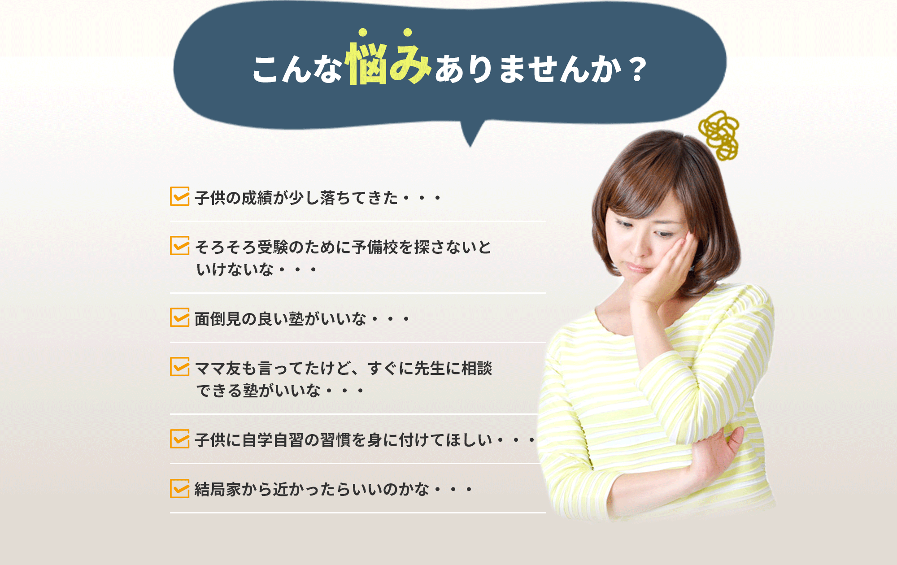
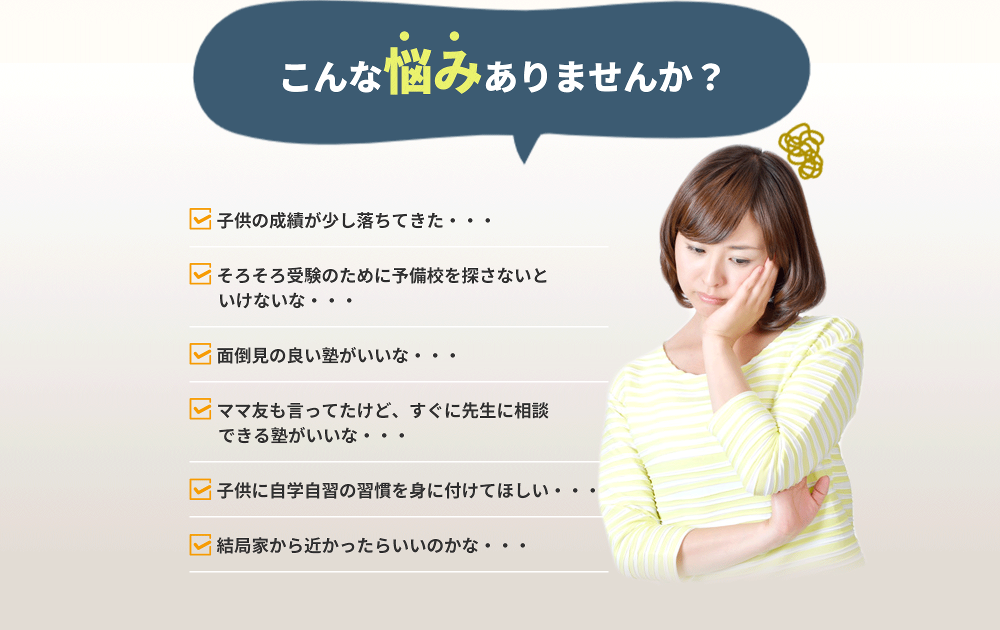
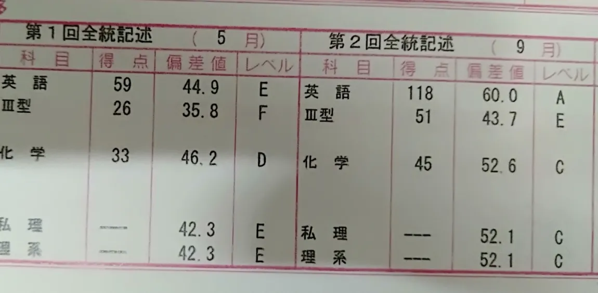
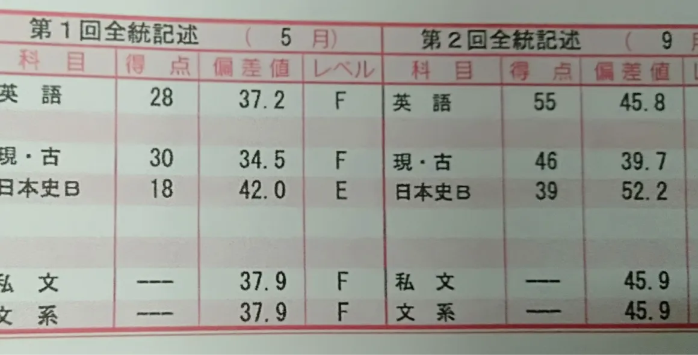
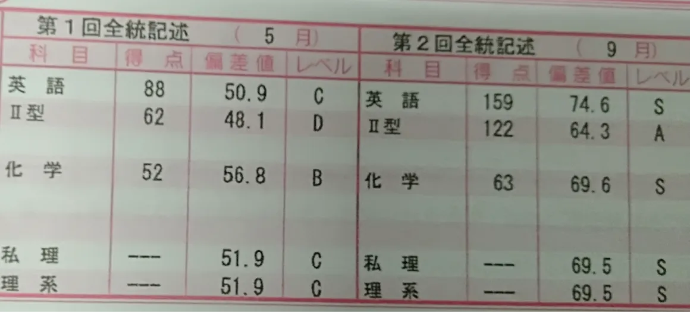

逆転合格で 夢を叶えた生徒が続出！
私たちには偏差値40台から医学部合格、商業高校から早稲田大学など、逆転合格実績が多数あります。どの生徒もどん底から合格をつかみ取ってきました。
逆転合格の声
特待生0でも! 難関大合格者続出
4か月での成績向上例
-
伸びにくい英語が15もUP
 T君
英語にとても苦手意識をもっている生徒でした。
横浜予備校では苦手だった英単語の暗記の仕方、英語の復習の仕方などを個別指導・個別カウンセリングを通じて徹底的に勉強しました。
最後は英語を武器に入試に挑むことが出来ました。 -
全教科少しずつ着実に成績UP
 Yさん
予備校に最後まで残って毎日勉強していた生徒です。
１年間、全てを勉強に捧げるという気迫がみなぎっていました。
どんな成績からでも最後まであきらめなければ夢は叶うということを体現した生徒です。
最終的には第一志望の青山学院大学に進学しました。 -
全教科爆伸び！
 Hさん
勉強に全く自信を持てない状態で横浜予備校にやってきました。
どの教科も「なぜ自分がそれをやっているのか？」をしっかりと理解して勉強を根気強く続けていきました。
予備校に来た時とは見違える表情で卒業していったのが印象的です。
授業料（極少人数授業で受講の場合）
お問い合わせ・資料請求はこちら
横浜予備校
〒231-0063
神奈川県横浜市中区花咲町1-18
第一測量桜木町ビル5F
受付時間 10：00～22：00（年中無休）